Project
Urbanbase 3D Studio
3D 인테리어 시뮬레이션 기반 SaaS 프로덕트의 UIUX 설계를 담당하며, 웹·앱 환경 전반의 사용자 경험 개선과 디자인 시스템 구축을 주도했습니다.
Overview
3D 스튜디오는 SaaS 서비스로, 개인과 기업 회원에게 제공되며, 유저들에게 손쉽게 원하는 공간을 스타일링해 볼 수 있는 툴을 제공합니다. 3D 뷰어를 통해 다양한 아이템을 디테일하게 확인할 수 있으며, 지도를 통해 자신의 집의 도면을 빠르게 찾아 스타일링을 시도해 볼 수 있습니다. 또는 직접 도면을 그려 상상 속의 공간을 3D로 구현해 볼 수 있으며, 완성한 공간 스타일링을 게시하여 다른 유저들과 커뮤니케이션할 수 있습니다.

사용자 리서치
Urbanbase 3D Studio를 활용하는 B2B 사용자 및 내부 팀 멤버들의 피드백을 토대로, 현재 제공 중인 서비스의 불편한 점을 식별하고자 하였습니다. 이를 통해 기능 단위로 프로젝트를 구성할 수 있고 프로젝트의 우선 순위를 정하는데 도움이 되었습니다.
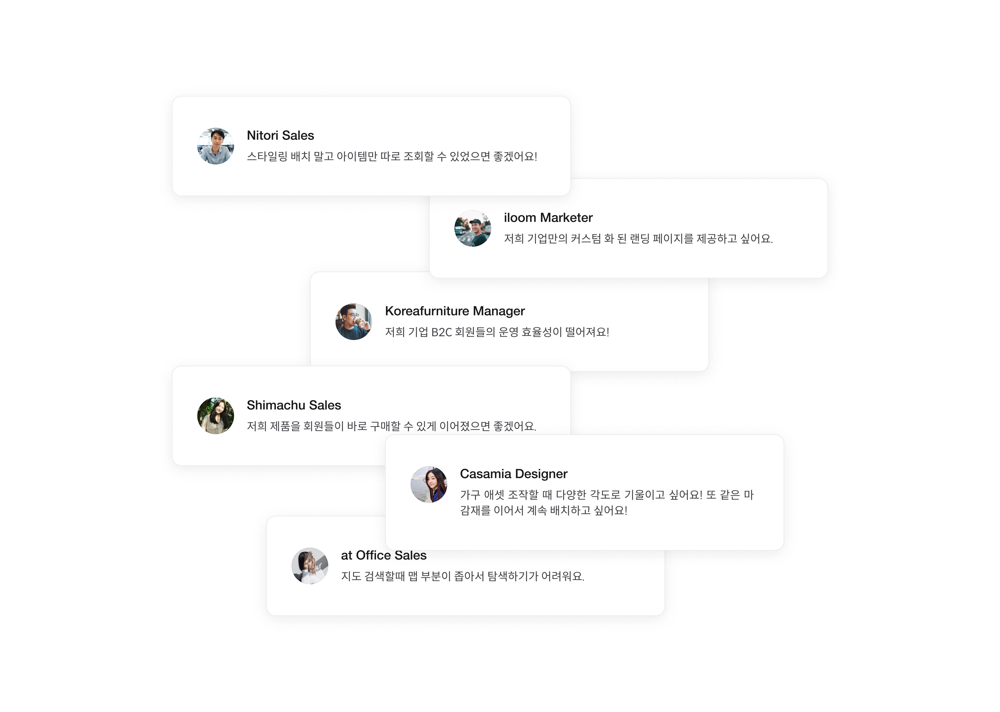
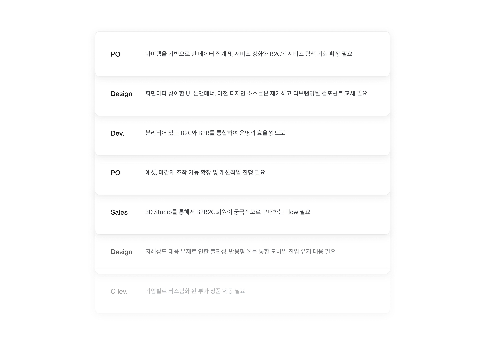
Voice of Customer(좌) / Backlog(우)
To-Be Solutions
앞서 살펴본 문제들을 해결하기 위해 여섯 가지 TO-BE 솔루션을 담았습니다. 랜딩페이지와 탐색 경험을 개선하고, 지도 기능을 단순화하는 한편, 마이페이지와 에디터 내 UX도 함께 고도화했습니다. 그리고 이 모든 변화를 일관성 있게 뒷받침할 디자인 시스템까지 구축하여, 사용자가 플랫폼을 더 직관적이고 편하게 쓸 수 있는 환경을 만드는 것을 목표로 했습니다.
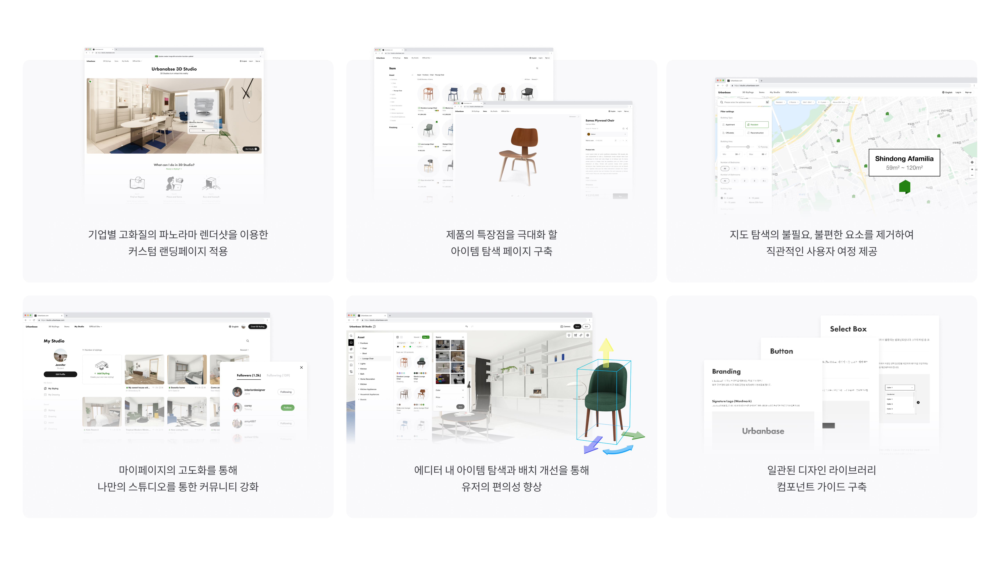
UX Goal
사용자 경험의 목표는 "유저가 원하는 아이템으로 가상의 공간을 만들고 홍보할 수 있게 한다. 다른 유저들이 만든 가상의 공간을 통해 영감을 받고 여정을 시작할 수 있도록 한다. 막연한 상상의 공간을 현실화할 수 있는 단계로서 사실감을 부여한다. 이 가상의 공간들은 추억이 되고, 현재가 되고, 미래가 되는 과정을 제공한다."로 정하여 진행하였습니다.
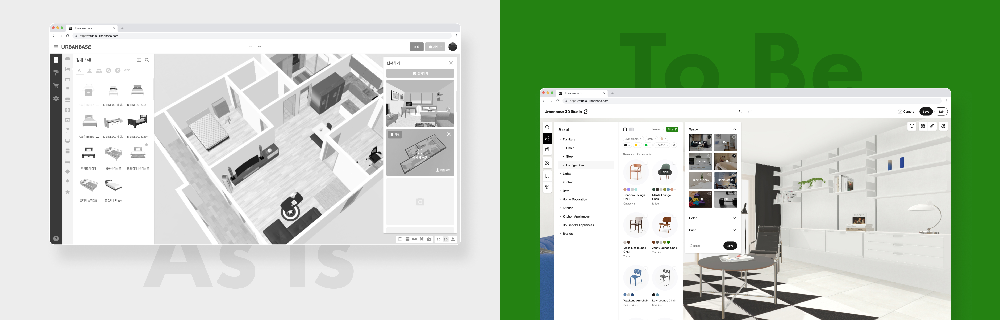
Design Style Guide
Helvetica, Spoqa와 Futura 폰트는 Regular에서부터 Bold까지 넓은 범위를 제공하여 가독성과 범용성을 높여 유저의 눈에 익숙하도록 하였습니다.
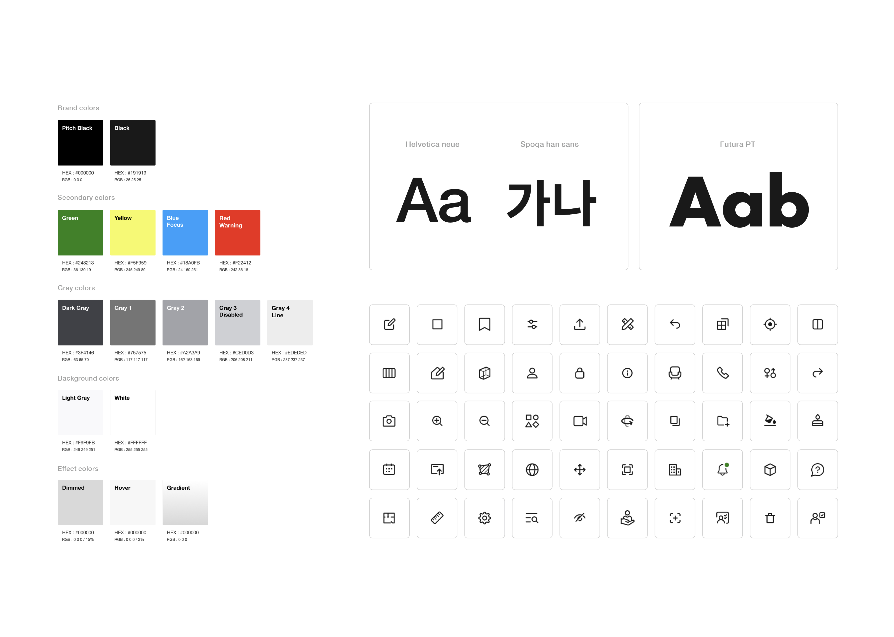
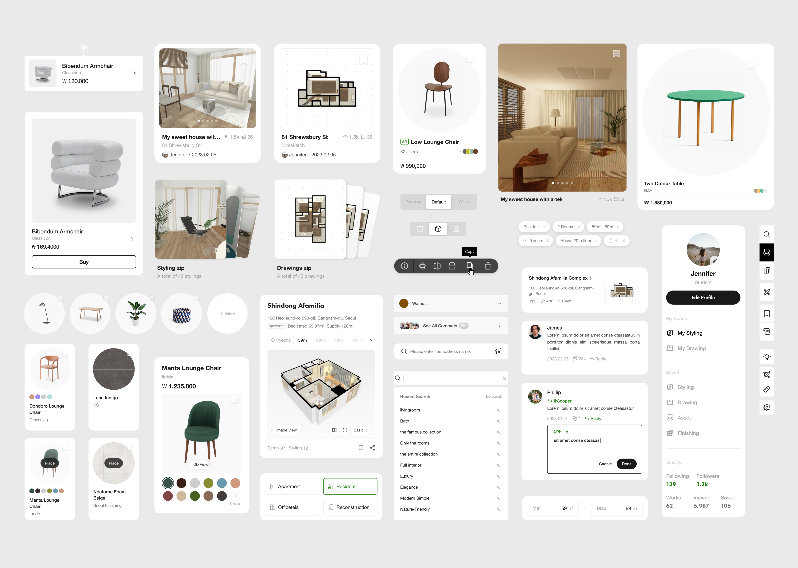
Style Guide(좌) / Components(우)
Lobby page
각 기업이 원하는 파노라마 뷰어를 상단에 효과적으로 노출하고, 360도 자동 회전을 통해 몰입도 높은 시각적 경험을 제공합니다. 뷰어 내에 태그된 아이템은 부가 정보를 함께 전달하여, 사용자가 마음에 드는 제품을 즉시 확인하고 구매로 자연스럽게 이어질 수 있도록 유도합니다.

특정 아이템을 강조하여 홍보하고 싶을 때, 기업이 해당 아이템을 메인 화면에 노출할 수 있도록 하였습니다. 사용자가 아이템을 호버할 경우, 해당 아이템의 AR Viewer를 실행할 수 있는 QR 코드가 나타납니다.
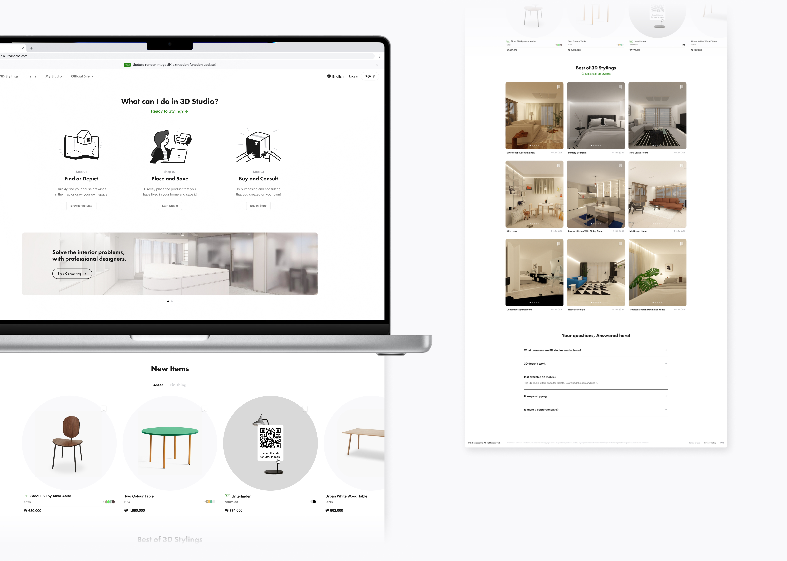
Explore page
아이템 탐색 페이지에서는 각 기업이 설정한 카테고리별 3D 아이템 목록을 제공하며, 스타일링 탐색 페이지에서는 유저들이 게시한 다양한 3D 스타일링을 검색 기능을 통해 손쉽게 찾아볼 수 있습니다.
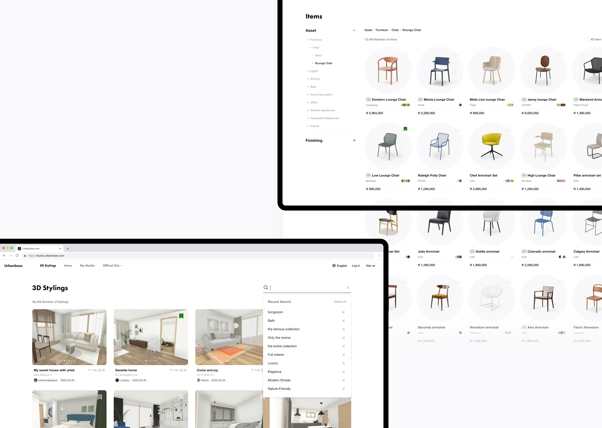
Detail 3D Viewer page : Styling
3D 스타일링 상세 페이지는 좌측의 넓은 뷰어 영역에서 마우스로 직접 제어하며 실감 나게 확인할 수 있고, 우측에는 상세 정보와 코멘트를 단계적으로 제공합니다. 또한 여러 스크린샷 중 하나를 클릭하면 해당 각도의 3D 뷰어로 즉시 전환되어 다양한 시점을 자유롭게 탐색할 수 있습니다.

Detail 3D Viewer page : Item
아이템 상세 페이지 역시 3D 아이템 뷰어가 넓은 좌측 영역에 제공되어, 사용자는 큰 화면에서 마우스를 직접 제어하여 상세한 아이템의 3D 디테일을 실감나게 확인할 수 있습니다. 우측 영역에는 아이템의 상세 정보가 제공되며, 구매 CTA 버튼을 클릭하면 스토어 페이지와 연동됩니다.
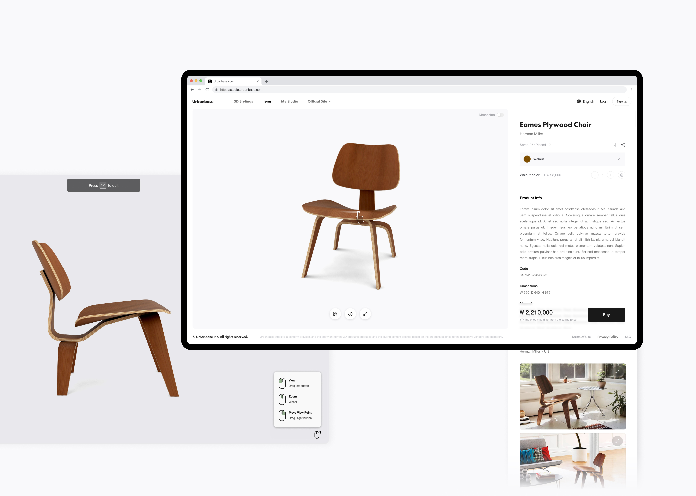
Map page
지도 탐색 화면은 좌측에 검색 필터와 도면 목록·상세 정보를, 우측에 맵 탐색 영역을 배치하여 지도를 가리지 않고 원활하게 탐색할 수 있도록 설계하였으며, 도면에서 스타일링까지 자연스러운 흐름이 이어지도록 고려하였습니다. 지도 위 도면 핀은 상태값에 따라 디자인을 구분하고 필수 정보만 노출하여 시각적 복잡도를 최소화하였습니다.
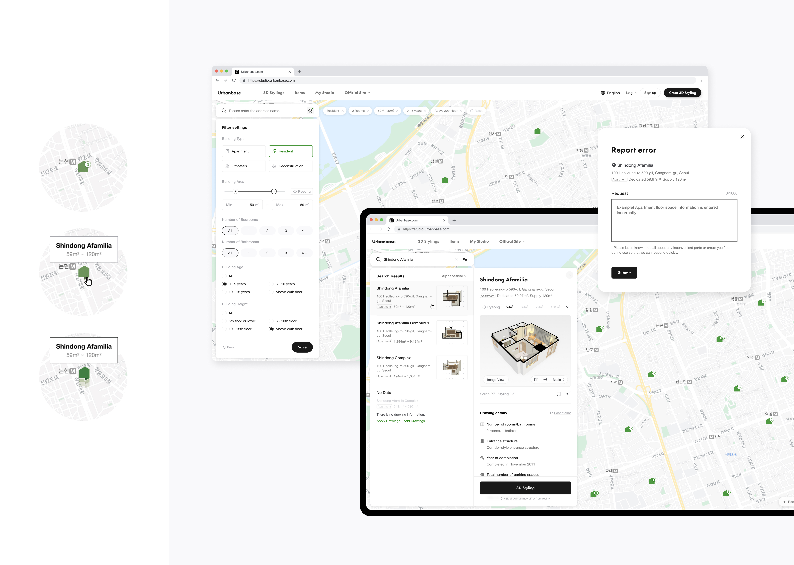
My page
유저의 대시보드 화면인 '마이 스튜디오'는 유저가 직접 제작한 3D 스타일링과 도면이 저장되고, 스크랩한 3D 스타일링, 도면, 그리고 아이템 목록을 확인할 수 있는 공간입니다. 또한, 다른 유저의 스튜디오를 탐색하거나 팔로우를 통해 서로 소통할 수 있습니다.
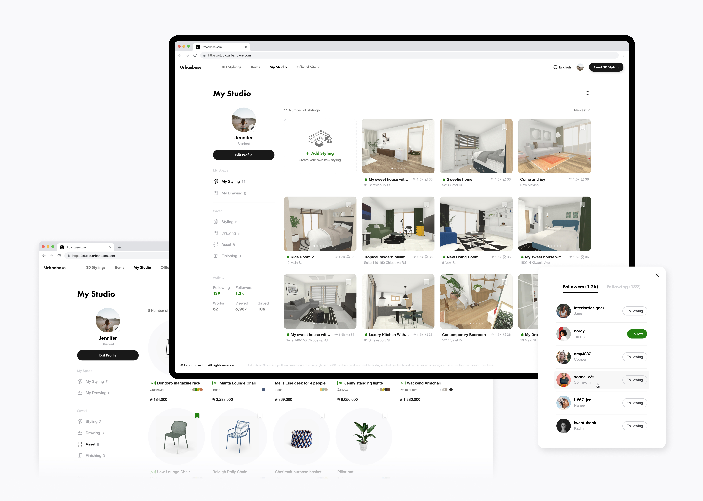
3D Styling Editor
3D 스타일링 에디터는 좌측 대메뉴에서 카테고리 탐색·검색·필터 기능을 통해 원하는 가구와 마감재를 빠르게 찾아 배치할 수 있으며, 우측 툴 영역은 에디터 설정과 화면 제어를 담당하되 뷰어 영역과의 간섭을 최소화하도록 설계하였습니다.
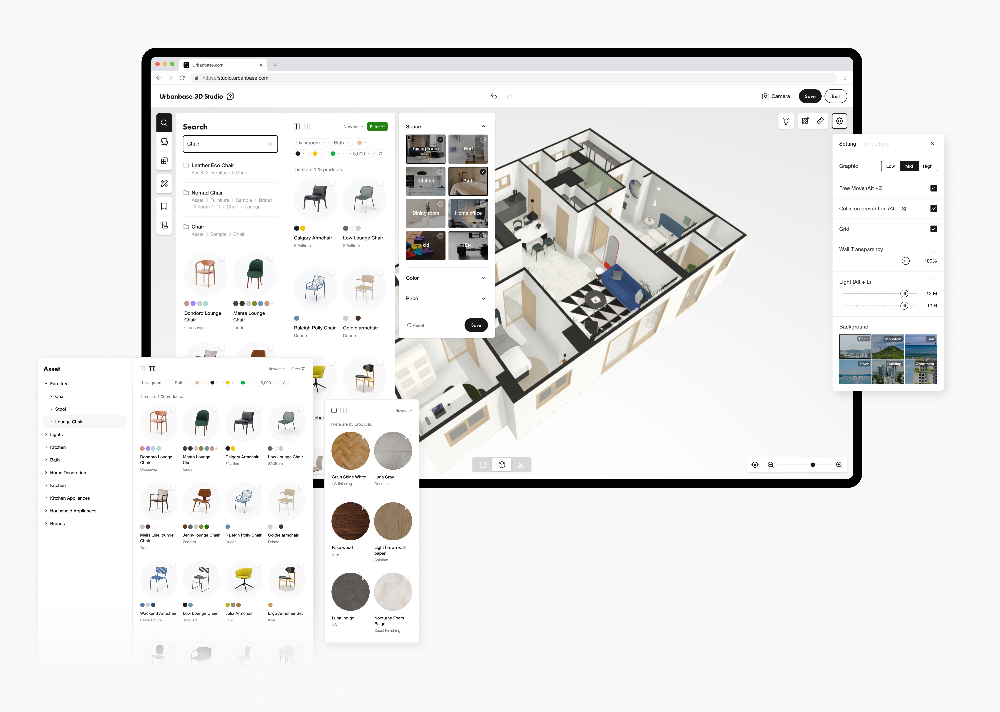
아이템 배치 전 좌측 카테고리 탭에서 상세 정보를 확인하고 3D View로 미리볼 수 있으며, 배치 후에는 우측 패널에서 색상·사이즈·회전 등 세부 값을 자유롭게 조절할 수 있습니다.
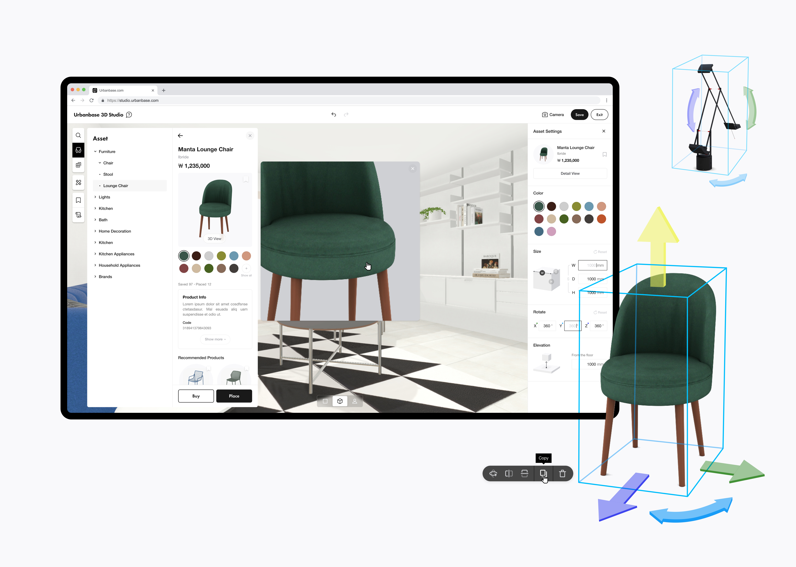
원하는 아이템이 없을 경우 커스텀 박스와 데스크를 활용해 직접 색상과 디자인을 설정하여 배치할 수 있으며, 일반 아이템과 동일한 애셋 컨트롤러 메뉴를 통해 위치와 방향도 손쉽게 조절할 수 있습니다.

스크랩한 아이템과 배치한 아이템은 구분 탭으로 쉽게 확인할 수 있으며, 기업 계정의 경우 예상 견적서도 함께 제공됩니다. GNB 우측에는 스타일링 스크린샷 촬영·저장 및 나가기 기능을 배치하였습니다.
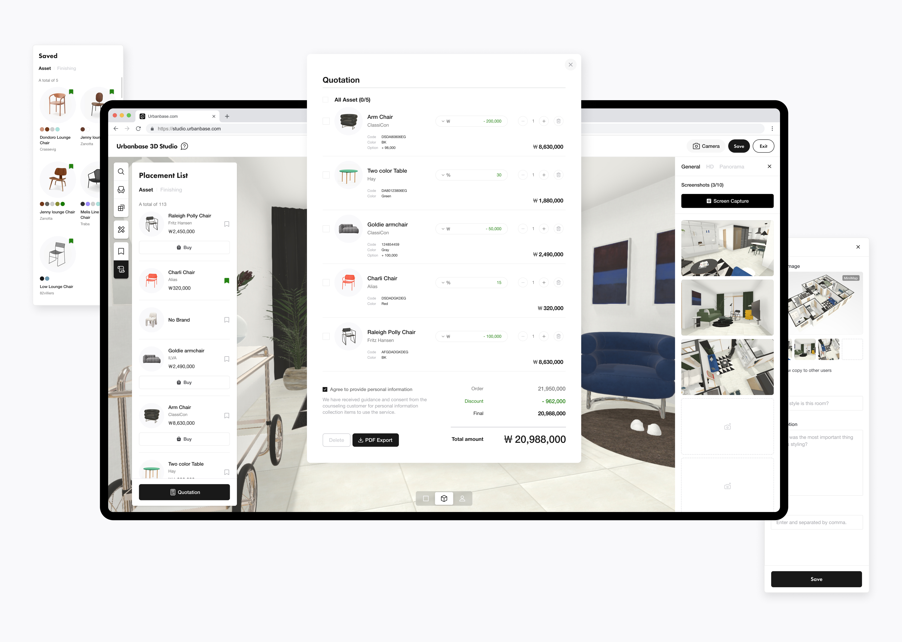
Login / Join
로그인은 상단 GNB를 통해 어디서든 접근 가능하며 레이어 팝업 형태로 제공됩니다. 팝업 디자인이 단조로워 보이지 않도록, 우측 영역에는 다른 유저들이 스타일링한 3D 스타일링의 썸네일 이미지와 게시글 제목을 함께 표시하여 다양한 컨텐츠를 보여주는 것으로 설계하였습니다.

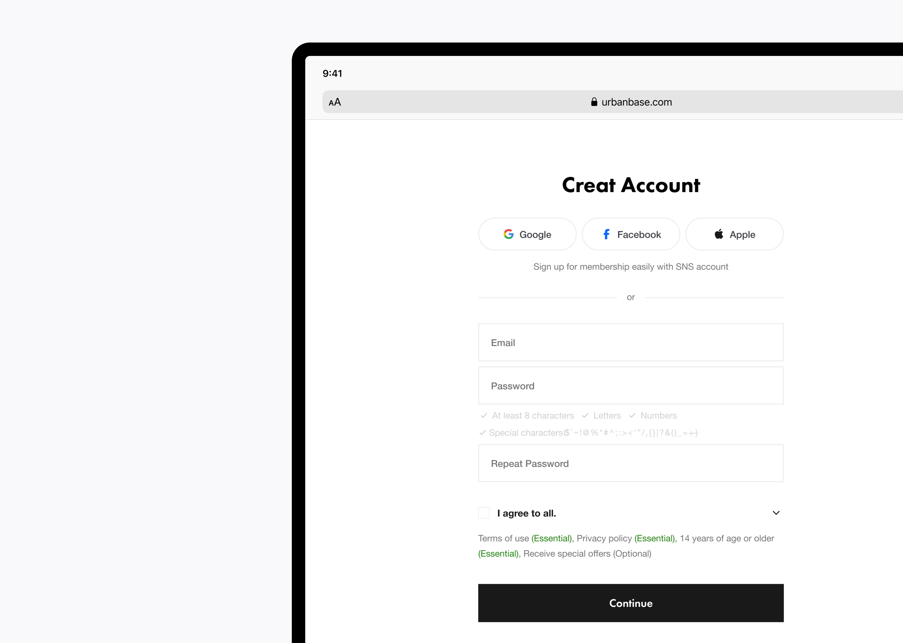
로그인 레이어 팝업(좌) / 회원가입(우)
Responsive Web
Urbanbase 3D Studio는 모바일 환경에서도 원활하게 이용할 수 있는 반응형 서비스로 제공됩니다. 단, 아이템 목록과 스타일링 상세 조회는 모바일에서 지원하며, 직접 스타일링을 배치하는 에디터 기능은 보다 정밀한 작업 환경이 필요한 만큼 웹에서만 이용 가능합니다.
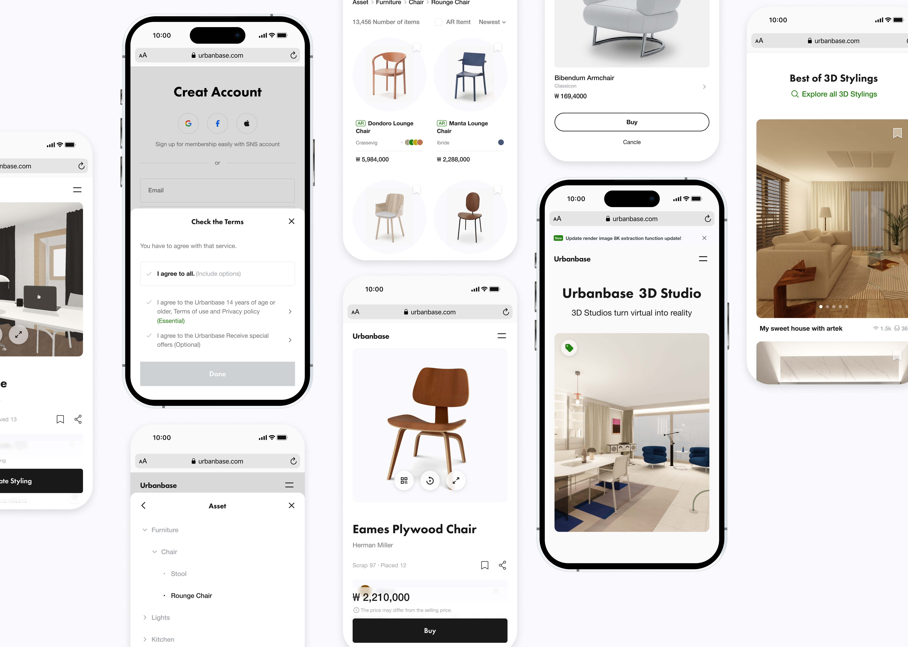
App
Urbanbase 3D Studio Tablet
태블릿 앱은 웹과 거의 동일한 기능을 제공하지만 몇 가지의 차이점이 있습니다. 태블릿 앱에서는 AR Viewer가 앱 자체에 탑재되어 있어 3D 아이템을 바로 증강현실로 확인할 수 있습니다. 또한, 여러 기업들의 3D Studio를 간편하게 변경하여 다양한 아이템을 가지고 3D 스타일링을 시도할 수 있습니다.

AR Viewer
아이템 상세 페이지에서 AR Viewer를 실행하면 즉시 카메라 화면으로 전환되며, 선택한 3D 아이템을 실제 공간에 증강현실로 배치해볼 수 있습니다. 다양한 색상을 실시간으로 변경해볼 수 있고, 제스처 가이드를 통해 처음 사용하는 유저도 조작 방법을 직관적으로 이해할 수 있도록 하였습니다.

추후 해당 아이템을 구매할 때 참고 이미지로 활용할 수 있도록 촬영 기능을 제공하여 사용자가 마음에 드는 배치와 구도로 사진을 저장할 수 있도록 하였습니다.

Profile
좌측 GNB의 하단 프로필 이미지를 탭하면 프로필 정보가 팝업 형태로 표시됩니다. 계정 정보는 웹 서비스에서만 수정 가능하여 읽기 전용으로만 제공됩니다. 이 팝업에서는 추가로 언어 변경, 비밀번호 변경, 기업 3D 스튜디오 관리, 그리고 로그아웃 기능을 제공합니다.
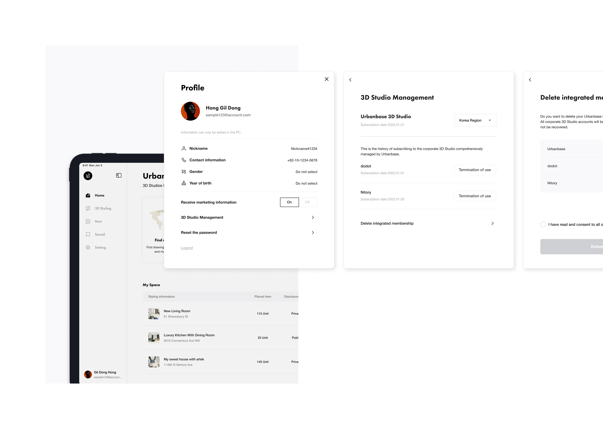
Company Select, Setting
설정 탭에서는 여러 가지 설정 옵션을 사용자가 조절할 수 있습니다. 좌측 GNB의 최상단 로고 원형 썸네일을 탭하면 다양한 기업 3D 스튜디오를 선택할 수 있는 화면이 상단에서 하단으로 트랜지션됩니다. 사용자가 최초로 기업을 추가할 때 해당 기업의 이용 약관 및 동의를 통해 기업 3D 스튜디오를 변경 할 수 있습니다.
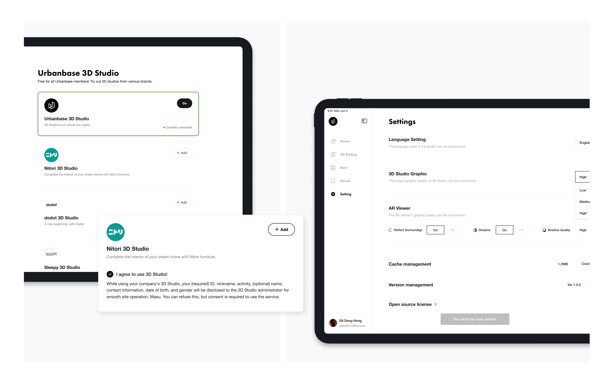
Design Guide Library (Foundation)
디자이너가 여러 명이 함께 작업하는 구조였기 때문에, 기준이 없으면 동일한 화면도 각기 다른 방식으로 구현될 가능성이 높았습니다. 어반베이스는 신규 피처 비중이 큰 서비스였기 때문에, 초기부터 컴포넌트를 정의하며 구조를 함께 정리해나갈 수 있는 환경이었습니다. 이를 바탕으로 작업과 동시에 디자인 시스템을 구축해나갔습니다.
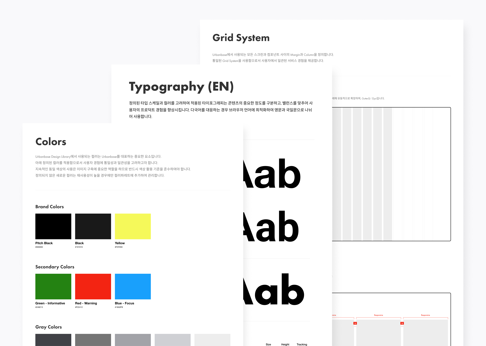
Design Guide Library (Component)
신규 피처가 지속적으로 추가되면서 컴포넌트도 함께 확장되었습니다. 여러 디자이너가 병렬로 작업하는 환경에서 일관된 기준을 유지하기 위해, 기능과 상태를 사전에 정의하고 라이브러리로 관리했습니다. 이를 통해 담당자와 관계없이 일관된 결과를 유지할 수 있었습니다.
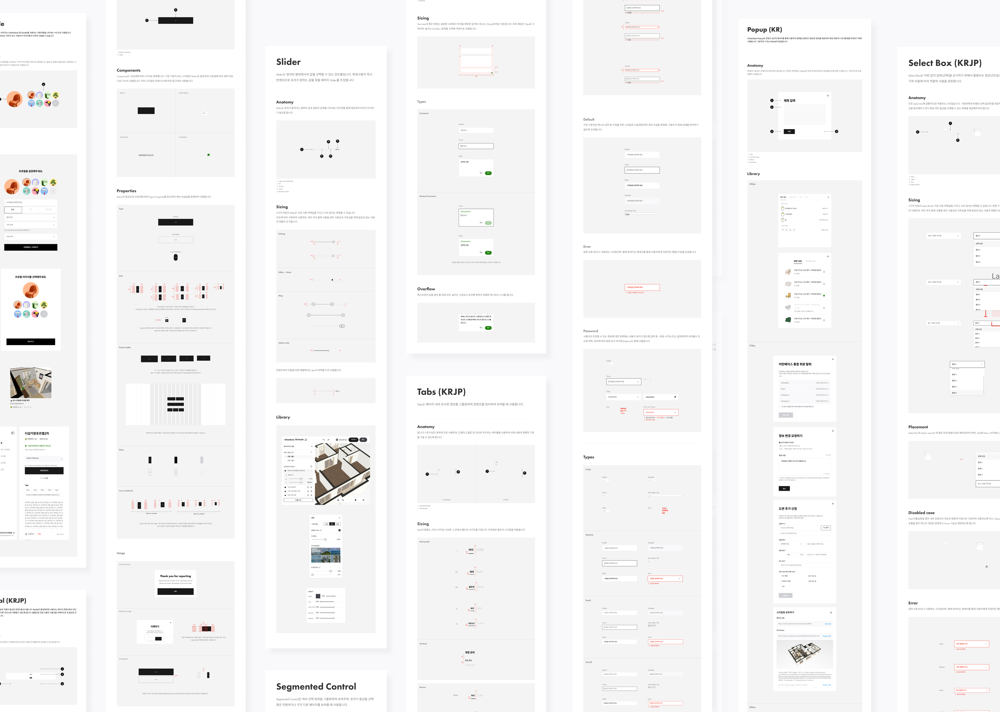
Wrapping up — Urbanbase 3D Studio
마무리
3D 스튜디오 SaaS 서비스의 다양한 프로젝트와 운영 업무를 통해 내부 고객사의 다양한 요구와 백로그에 적극 대응하며 향상된 서비스를 제공하기 위해 노력했습니다. 이를 통해 사용성을 지속적으로 개선하고, 사용자의 유입 및 체류 시간을 증가시키는데 기여할 수 있었습니다. 이러한 노력을 통해 고객들에게 뛰어난 경험을 제공하여 서비스의 성과를 높일 수 있었습니다.
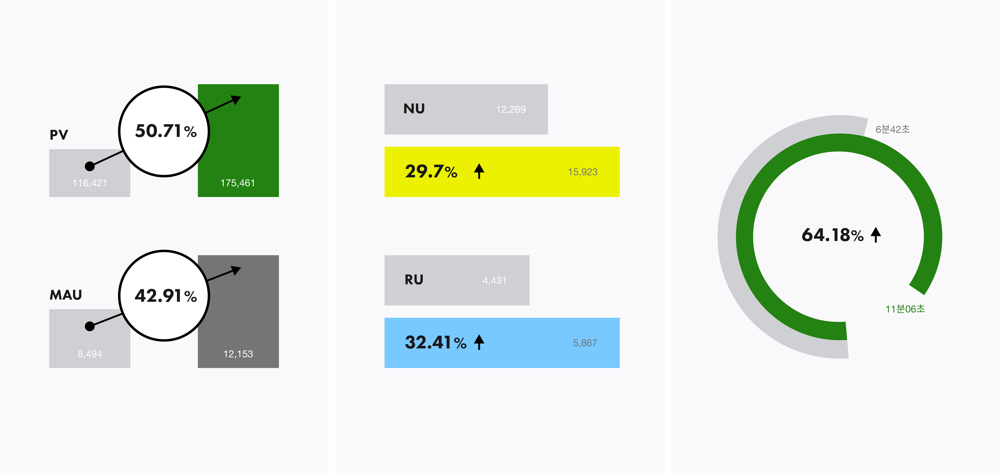
페이지뷰 & 순 사용자 증감율 (좌) / 신규 사용자 & 재사용자 증감율(중앙) / 평균 참여 시간 증감율 (우)